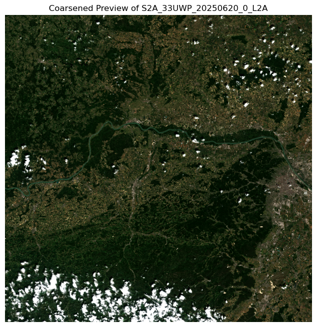

"""Create a STAC-aware GeoZarr RGB tile of a Sentinel-2 scene over Vienna."""
import warnings
from datetime import date
from pathlib import Path
import jsonschema
import matplotlib.pyplot as plt
import pystac_client
import rioxarray as rxr
import xarray as xrCreate a STAC-aware GeoZarr RGB tile of a Sentinel-2 scene over Vienna.
This example demonstrates a best-practice workflow for creating a STAC-aware, interoperable GeoZarr store from Sentinel-2 Cloud-Optimized GeoTIFFs (COGs).
The key steps are:
- Query Earth-Search for a recent, low-cloud Sentinel-2 L2A scene.
- Stream and stack the source RGB bands into a single, lazy xarray.DataArray.
- Prepare a GeoZarr-compliant xarray.Dataset in memory, which includes embedding STAC metadata and refining the CRS attributes.
- Write the final, consolidated GeoZarr store.
- Verify the result by reopening the store and inspecting the STAC metadata.
- Display a coarsened preview of the RGB image.
Query Earth-Search for a recent, low-cloud Sentinel-2 L2A scene.
print("Step 1: Querying for a Sentinel-2 scene over Vienna...")
API = "https://earth-search.aws.element84.com/v1"
coll = "sentinel-2-l2a"
bbox = [16.20, 48.10, 16.45, 48.30] # Vienna
today = date.today()
last_year = today.replace(year=today.year - 1)
daterange = f"{last_year:%Y-%m-%d}/{today:%Y-%m-%d}"
item = next(
pystac_client.Client.open(API)
.search(
collections=[coll],
bbox=bbox,
datetime=daterange,
query={"eo:cloud_cover": {"lt": 5}},
limit=1,
)
.items(),
None,
)
if not item:
raise RuntimeError("No Sentinel-2 scene found for the specified criteria.")
print(f"Found scene: {item.id} (Cloud cover: {item.properties['eo:cloud_cover']:.2f}%)")Step 1: Querying for a Sentinel-2 scene over Vienna...
Found scene: S2A_33UWP_20250620_0_L2A (Cloud cover: 4.52%)Stream and stack the source RGB bands into a lazy DataArray.
print("\nStep 2: Streaming and stacking source COG bands...")
bands = ["red", "green", "blue"]
rgb = xr.concat(
[
rxr.open_rasterio(
item.assets[b].href, chunks={"band": 1, "x": 2048, "y": 2048}, masked=True
).assign_coords(band=[b])
for b in bands
],
dim="band",
)
rgb.name = "radiance"
# Assign the Coordinate Reference System from the STAC item's properties.
rgb = rgb.rio.write_crs(item.properties["proj:code"])
Step 2: Streaming and stacking source COG bands...Prepare a complete, GeoZarr-compliant xarray.Dataset in memory.
print("\nStep 3: Preparing the final xarray.Dataset with all metadata...")
# Convert the stacked RGB DataArray into a Dataset and name the data variable
radiance_ds = rgb.to_dataset(name="radiance")
# Grab the original GeoTransform from the DataArray
transform = rgb.rio.transform()
# Ensure x/y are recognized as spatial dims, then write transform + CRS at the dataset level
radiance_ds = (
radiance_ds.rio.set_spatial_dims(x_dim="x", y_dim="y")
.rio.write_transform(transform)
.rio.write_crs(item.properties["proj:code"])
)
# Remove the "spatial_ref" attribute because it is redundant with "crs_wkt" and not included in CF conventions.
_ = radiance_ds["spatial_ref"].attrs.pop("spatial_ref", None)
Step 3: Preparing the final xarray.Dataset with all metadata...Build the STAC Item metadata dictionary
gsd = min(item.assets[b].to_dict().get("gsd", 10) for b in bands)
store_path = Path(f"../output/{coll}_{'_'.join(bands)}_{item.id}.zarr")
stac_metadata = {
"type": "Item",
"stac_version": "1.0.0",
"id": item.id,
"bbox": item.bbox,
"geometry": item.geometry,
"properties": {
"datetime": item.properties["datetime"],
"proj:code": item.properties["proj:code"],
"platform": item.properties["platform"],
"instruments": item.properties["instruments"],
"eo:cloud_cover": item.properties["eo:cloud_cover"],
"gsd": gsd,
},
"assets": {
"data": {
"href": store_path.name,
"type": "application/x-zarr",
"roles": ["data"],
}
},
"license": item.properties.get("license", "proprietary"),
}
# Basic STAC schema check
jsonschema.validate(
instance=stac_metadata,
schema={"type": "object", "required": ["type", "id", "stac_version", "assets"]},
)
# Embed it in the dataset attrs
radiance_ds.attrs["stac"] = stac_metadataWrite the final, consolidated GeoZarr store to disk.
print(f"\nStep 4: Writing the final GeoZarr store to '{store_path}'...")
# Ignore warnings about codecs, datetimes, and consolidated metadata not currently being part of the
# Zarr format 3 specification, since it is not relevant for this example.
warnings.filterwarnings("ignore", message=".*Zarr format 3 specification.*")
# Mode 'w' will remove everything in the store_path before writing new data.
store = radiance_ds.chunk({"y": 512, "x": 512}).to_zarr(
store_path, mode="w", consolidated=True
)
Step 4: Writing the final GeoZarr store to '../output/sentinel-2-l2a_red_green_blue_S2A_33UWP_20250620_0_L2A.zarr'...Verify the result by reopening the store and checking for STAC metadata.
print("\nStep 5: Verifying the created GeoZarr store...")
with xr.open_zarr(store_path, consolidated=True) as verified_ds:
if "stac" not in verified_ds.attrs:
raise RuntimeError("FAIL: STAC metadata was not found.")
print("✅ SUCCESS: Embedded STAC metadata was found.")
Step 5: Verifying the created GeoZarr store...
✅ SUCCESS: Embedded STAC metadata was found.Display a coarsened preview of the RGB image.
print("\nStep 6: Generating and displaying a coarsened preview...")
with xr.open_zarr(store_path, consolidated=True) as ds_to_plot:
preview = ds_to_plot.radiance.coarsen(y=8, x=8, boundary="trim").mean()
# Apply a simple contrast stretch for better visualization.
p2, p98 = preview.quantile(0.02), preview.quantile(0.98)
preview_stretched = preview.clip(min=p2, max=p98)
preview_stretched = (preview_stretched - p2) / (p98 - p2)
rgb_preview = preview_stretched.transpose("y", "x", "band").values
fig, ax = plt.subplots(figsize=(8, 8))
ax.imshow(rgb_preview)
ax.set_title(f"Coarsened Preview of {item.id}")
ax.set_axis_off()
plt.show()
Step 6: Generating and displaying a coarsened preview...